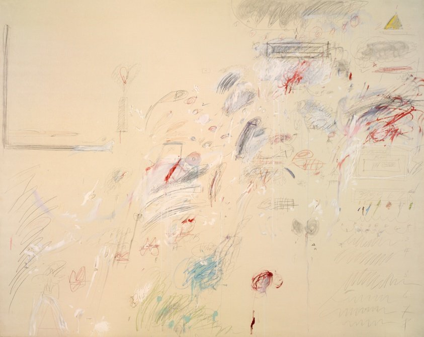

The First Part of the Return from Parnassus
Cy Twombly · 1961 · Oil paint, lead pencil, wax crayon, and colored pencil on canvas · 240.7 × 300.7 cm · Art Institute of Chicago
In copyright. Look and learn: shown for study, not for download.
Twombly worked on this canvas with oil paint, lead pencil, wax crayon and colored pencil. It is about 2.4 metres high and 3 metres wide. He had moved to Rome in 1957 and made it his primary city, and he was thirty-two or thirty-three when he painted this.